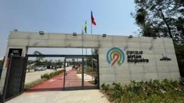

Sobre o Local
O Parque Airton Nogueira Inaugurado em setembro de 2024 no bairro Rodeio (entrada pela Av. Antônio de Almeida), em Mogi das Cruzes, o Parque Airton Nogueira teve investimento de R$ 10,8 milhões, provenientes de recursos do Banco de Desenvolvimento da América Latina. Com 139.478,04 m², conta com campo de futebol, quadras de areia e tênis, quadras poliesportivas e de basquete 3x3, "parcão" para pets, ATI, playground, praça de convivência, arena de lutas, parkour, pista de caminhada e ciclovia. Funciona de segunda a sábado das 7h às 22h e aos domingos das 7h às 18h, com estacionamento para cerca de 170 veículos.
"O parque é um ótimo para diferentes esportes!"
Informações
Funcionamento e avaliação do parque
| Item | Detalhe | Observação |
|---|---|---|
| Funcionamento | Todos os dias | 8h às 10h |
| Entrada | Gratuita | Acesso livre |
| Avaliação média | 4,9 de 5 | 6.000 avaliações |
Comodidades
- 1. Quadras de Areia
- 2. Pista de Corrida
- 3. Eventos para crianças
- 4. Quadras de basquete
Próximos eventos
Campeonato de Volei para iniciantes
"Permitido para Duplas do mesmo sexo ou mista"
- Data: 08/09/2026
- Hora: 8 horas até 20 Horas
- Premiação e troféu
Contatos e Links
Campeonato de Volei para iniciantes
"Permitido para Duplas do mesmo sexo ou mista"

Parque Parque Airton Nogueira